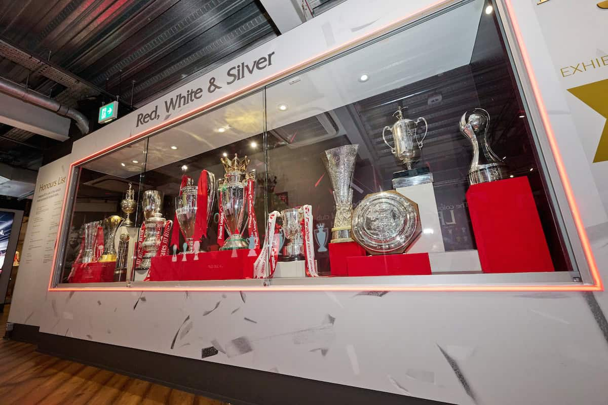

A Liverpool első jelentős sikerei már a 20. század elején megérkeztek. A klub 1901-ben szerezte meg első angol bajnoki címét, majd 1906-ban ismét az első helyen végzett. Ezek a sikerek bizonyították, hogy a Liverpool rövid idő alatt az angol futball egyik fontos klubjává vált. A későbbi évtizedekben ezekhez újabb bajnoki címek kapcsolódtak.
Bill Shankly vezetésével a Liverpool az 1960-as években ismét meghatározó angol csapattá vált. A klub 1962-ben visszajutott az élvonalba, majd 1964-ben és 1966-ban is megnyerte az angol bajnokságot. 1965-ben a Liverpool megszerezte első FA Cup-trófeáját Shankly irányítása alatt. Ez az időszak megalapozta a klub későbbi nagy korszakait.
A Liverpool 1973-ban nyerte meg első európai trófeáját, amikor az UEFA-kupában sikerült a döntőben felülmúlnia a Borussia Mönchengladbachot. Ez jelentette a klub nemzetközi sikereinek kezdetét. A Liverpool ezt követően rendszeresen szerepelt az európai kupasorozatokban. Az európai tapasztalat később fontos szerepet játszott a klub nemzetközi felemelkedésében.
1977-ben a Liverpool megszerezte története első Bajnokcsapatok Európa-kupája-trófeáját, amely a mai Bajnokok Ligájának elődje volt. A döntőben a Borussia Mönchengladbach volt az ellenfél, a Liverpool pedig 3–1-re nyert. Ezzel a klub először lett Európa legjobb klubcsapata. A győzelem egy hosszú európai sikersorozat kezdetét jelentette.
Bob Paisley vezetésével a Liverpool tovább folytatta a nemzetközi sikereket. A klub 1978-ban és 1981-ben is megnyerte a BEK-et, így néhány éven belül háromszor lett Európa bajnoka. Paisley különösen fontos szerepet játszott a klub történetében, hiszen vezetésével a Liverpool Angliában és Európában is meghatározó csapattá vált. Ebben az időszakban alakult ki a Liverpool egyik legsikeresebb korszakának alapja.
Az 1983–84-es szezon különösen emlékezetes maradt a Liverpool számára. A klub megnyerte az angol bajnokságot, az angol Ligakupát és a BEK-et is. Ezzel a Liverpool egyetlen szezon alatt három jelentős trófeát szerzett. Ez a teljesítmény jól mutatta, milyen erős volt a klub az 1980-as évek elején.
1986-ban Kenny Dalglish vezetésével a Liverpool újabb különleges sikert ért el. A csapat ugyanabban a szezonban megnyerte az angol bajnokságot és az FA Cupot is. A Liverpool a döntőben az Evertonnal találkozott, és 3–1-es győzelemmel szerezte meg a kupát. Ez volt az első alkalom, hogy a klub ugyanabban a szezonban megnyerte az angol bajnokságot és az FA kupát.
2001-ben a Liverpool egy különleges szezon végén három nagy kupatrófeát nyert. Gérard Houllier csapata megnyerte a Ligakupát, az FA Cupot és az UEFA-kupát. Az UEFA-kupa döntője különösen emlékezetes volt, mivel a Liverpool hosszabbítás után 5–4-re győzte le az Alavést. A három trófea megszerzése a klub egyik legsikeresebb szezonját jelentette a 2000-es évek elején.
A Liverpool egyik legismertebb mérkőzése a 2005-ös Bajnokok Ligája-döntő volt az AC Milan ellen. A Liverpool az első félidőben 3–0-s hátrányba került, de a második félidőben hat perc alatt három gólt szerzett, így 3–3 lett az eredmény. A hosszabbításban már nem született újabb gól, ezért tizenegyesek döntöttek. A Liverpool végül megnyerte a tizenegyespárbajt, és ötödik alkalommal hódította el a Bajnokok Ligája elődjének és sorozatának európai trófeáját.
A klub története során számos hazai és nemzetközi trófeát nyert. Ezek közé tartoznak az angol bajnoki címek, az FA Cup- és Ligakupa-győzelmek, valamint az európai kupasikerek. A Liverpool hat alkalommal nyerte meg a Bajnokok Ligáját/BEK-et, amivel az európai futball történetének egyik legsikeresebb angol klubja. A trófeák mellett az olyan mérkőzések, mint a 2005-ös isztambuli döntő, különleges helyet foglalnak el a klub történetében.